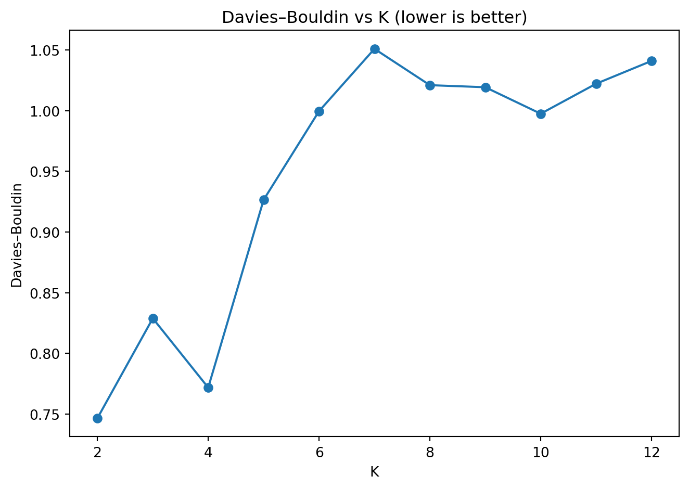

Code
# Load dataset (no assumptions, no output)
df = pd.read_csv(DATA_URL)Segment contacts into actionable behavioral groups to support outreach planning, CRM prioritization, and relationship management.
Time bands (exact):
business_hours: 08:00–17:59evening: 18:00–20:59late_night: 21:00–23:59early_morning: 00:00–07:59Working days:
Phase 1 Audit → Phase 2 Contact-level features → Phase 3 Preprocess → Phase 4 Choose K → Phase 5 Fit/Interpret → then stability/ARI → sensitivity (feature blocks) → PCA viz → final recommendations.
# Load dataset (no assumptions, no output)
df = pd.read_csv(DATA_URL)# Dataset overview (executive-level structural metrics)
dataset_overview = pd.DataFrame({
"Metric": [
"Rows",
"Columns",
"Total cells",
"Memory usage (MB)"
],
"Value": [
int(df.shape[0]),
int(df.shape[1]),
int(df.shape[0] * df.shape[1]),
f"{df.memory_usage(deep=True).sum() / 1e6:.2f}"
]
})
dataset_overview| Metric | Value | |
|---|---|---|
| 0 | Rows | 24952 |
| 1 | Columns | 9 |
| 2 | Total cells | 224568 |
| 3 | Memory usage (MB) | 9.10 |
# Column inventory (schema audit table)
column_inventory = (
pd.DataFrame({
"Column name": df.columns,
"Data type": df.dtypes.astype(str),
"Non-null count": df.notna().sum().values,
"Non-null rate": (df.notna().mean()).round(3).values
})
.sort_values("Column name")
.reset_index(drop=True)
)
column_inventory| Column name | Data type | Non-null count | Non-null rate | |
|---|---|---|---|---|
| 0 | category | str | 24952 | 1.0 |
| 1 | date_stamp | str | 24952 | 1.0 |
| 2 | day-of_week | str | 24952 | 1.0 |
| 3 | dialled_phone_number | int64 | 24952 | 1.0 |
| 4 | duration_in_seconds | int64 | 24952 | 1.0 |
| 5 | month | str | 24952 | 1.0 |
| 6 | name | str | 24952 | 1.0 |
| 7 | time | str | 24952 | 1.0 |
| 8 | year | int64 | 24952 | 1.0 |
# Sample records (human sanity check only)
df.head(3)| date_stamp | time | day-of_week | month | year | dialled_phone_number | name | duration_in_seconds | category | |
|---|---|---|---|---|---|---|---|---|---|
| 0 | 1/1/2022 | 16:03:01 | Saturday | January | 2022 | 648578192 | Abel | 179 | Unknown |
| 1 | 1/1/2022 | 16:06:17 | Saturday | January | 2022 | 814500001 | Husband CEL01 | 66 | Family |
| 2 | 1/1/2022 | 19:08:44 | Saturday | January | 2022 | 814500001 | Husband CEL01 | 38 | Family |
# Identify key columns (schema audit, no assumptions)
# ------------------------------------------------------------------
# Normalise column names once (single source of truth)
# ------------------------------------------------------------------
col_map = {c: c.lower().strip() for c in df.columns}
# ------------------------------------------------------------------
# Detection rules (explicit, auditable, extensible)
# ------------------------------------------------------------------
DETECTION_RULES = OrderedDict({
"Date": {
"description": "Calendar date component",
"match_any": ["date"]
},
"Time": {
"description": "Clock time component",
"match_exact_or_contains": ["time"]
},
"Duration": {
"description": "Call duration (numeric, any unit)",
"match_any": ["duration", "seconds", "secs", "sec", "minutes", "mins"]
},
"Identifier": {
"description": "Contact or phone identifier",
"match_any": ["dialled", "dialed", "phone", "number", "contact"]
},
"Category": {
"description": "Human or system call classification",
"match_any": ["category"]
}
})
# ------------------------------------------------------------------
# Apply detection rules
# ------------------------------------------------------------------
records = []
for field, rule in DETECTION_RULES.items():
detected = []
for col, lc in col_map.items():
if "match_exact_or_contains" in rule:
if any(lc == k or k in lc for k in rule["match_exact_or_contains"]):
detected.append(col)
elif "match_any" in rule:
if any(k in lc for k in rule["match_any"]):
detected.append(col)
records.append({
"Field type": field,
"Purpose": rule["description"],
"Detected columns": ", ".join(detected) if detected else "—",
"Count": len(detected),
"Status": "OK" if detected else "Missing"
})
# ------------------------------------------------------------------
# Canonical schema audit table (Quarto renders automatically)
# ------------------------------------------------------------------
schema_audit = pd.DataFrame(records)
schema_audit| Field type | Purpose | Detected columns | Count | Status | |
|---|---|---|---|---|---|
| 0 | Date | Calendar date component | date_stamp | 1 | OK |
| 1 | Time | Clock time component | time | 1 | OK |
| 2 | Duration | Call duration (numeric, any unit) | duration_in_seconds | 1 | OK |
| 3 | Identifier | Contact or phone identifier | dialled_phone_number | 1 | OK |
| 4 | Category | Human or system call classification | category | 1 | OK |
# Validate required columns exist (hard audit gate)
required_cols = [
"date_stamp",
"time",
"duration_in_seconds",
"dialled_phone_number"
]
missing_required = [c for c in required_cols if c not in df.columns]
schema_validation = pd.DataFrame({
"Required column": required_cols,
"Present in dataset": [c in df.columns for c in required_cols]
})
schema_validation| Required column | Present in dataset | |
|---|---|---|
| 0 | date_stamp | True |
| 1 | time | True |
| 2 | duration_in_seconds | True |
| 3 | dialled_phone_number | True |
# Stop execution if schema is invalid
assert len(missing_required) == 0, f"Missing required columns: {missing_required}"# Canonical timestamp
df["call_ts"] = pd.to_datetime(
df["date_stamp"].astype(str).str.strip() + " " +
df["time"].astype(str).str.strip(),
errors="coerce"
)
# Canonical duration (seconds)
df["dur_sec"] = pd.to_numeric(
df["duration_in_seconds"],
errors="coerce"
)bad_ts = int(df["call_ts"].isna().sum())
bad_dur = int(df["dur_sec"].isna().sum())
negative_dur = int((df["dur_sec"] < 0).sum())
timestamp_min = df["call_ts"].min()
timestamp_max = df["call_ts"].max()
integrity_audit = pd.DataFrame({
"Check": [
"Timestamp parse failures",
"Duration numeric failures",
"Negative durations",
"Timestamp range (min)",
"Timestamp range (max)",
"Timestamp success rate",
"Duration success rate"
],
"Value": [
bad_ts,
bad_dur,
negative_dur,
str(timestamp_min),
str(timestamp_max),
f"{df['call_ts'].notna().mean():.3f}",
f"{df['dur_sec'].notna().mean():.3f}"
]
})
integrity_audit| Check | Value | |
|---|---|---|
| 0 | Timestamp parse failures | 0 |
| 1 | Duration numeric failures | 0 |
| 2 | Negative durations | 0 |
| 3 | Timestamp range (min) | 2022-01-01 16:03:01 |
| 4 | Timestamp range (max) | 2024-10-04 20:15:16 |
| 5 | Timestamp success rate | 1.000 |
| 6 | Duration success rate | 1.000 |
assert bad_ts == 0, "Timestamp parsing failed for some rows."
assert bad_dur == 0, "Duration numeric conversion failed for some rows."
assert negative_dur == 0, "Negative durations detected."contact_id (do not export raw identifiers)def stable_contact_id(x: int | str) -> str:
s = str(x).encode("utf-8")
return hashlib.sha256(s).hexdigest()[:12]
df["contact_id"] = df["dialled_phone_number"].map(stable_contact_id)
print("Unique contacts (hashed):", int(df["contact_id"].nunique()))
assert df["contact_id"].isna().sum() == 0Unique contacts (hashed): 2091df["hour"] = df["call_ts"].dt.hour
df["dow"] = df["call_ts"].dt.dayofweek # Mon=0..Sun=6
def assign_time_band(hour: int) -> str:
if TIME_BANDS["early_morning"][0] <= hour <= TIME_BANDS["early_morning"][1]:
return "early_morning"
if TIME_BANDS["business_hours"][0] <= hour <= TIME_BANDS["business_hours"][1]:
return "business_hours"
if TIME_BANDS["evening"][0] <= hour <= TIME_BANDS["evening"][1]:
return "evening"
if TIME_BANDS["late_night"][0] <= hour <= TIME_BANDS["late_night"][1]:
return "late_night"
raise ValueError(f"Hour out of range: {hour}")
df["time_band"] = df["hour"].map(assign_time_band)
df["is_open_day"] = df["dow"].isin(OPEN_DOW).astype(int)
df["is_closed_day"] = df["dow"].isin(CLOSED_DOW).astype(int)
# sanity checks: mutually exclusive and exhaustive
assert set(df["time_band"].unique()) == {"early_morning", "business_hours", "evening", "late_night"}
assert int((df["is_open_day"] + df["is_closed_day"]).min()) == 1
assert int((df["is_open_day"] + df["is_closed_day"]).max()) == 1
df[["call_ts","hour","dow","time_band","is_open_day","is_closed_day"]].head(5)| call_ts | hour | dow | time_band | is_open_day | is_closed_day | |
|---|---|---|---|---|---|---|
| 0 | 2022-01-01 16:03:01 | 16 | 5 | business_hours | 1 | 0 |
| 1 | 2022-01-01 16:06:17 | 16 | 5 | business_hours | 1 | 0 |
| 2 | 2022-01-01 19:08:44 | 19 | 5 | evening | 1 | 0 |
| 3 | 2022-01-01 20:03:11 | 20 | 5 | evening | 1 | 0 |
| 4 | 2022-01-02 14:22:44 | 14 | 6 | business_hours | 0 | 1 |
cat_col = "category" if "category" in df.columns else None
summary = pd.DataFrame({
"Metric": [
"Rows (calls)",
"Columns",
"Unique contacts (hashed)",
"Timestamp parsable rate",
"Timestamp range (min)",
"Timestamp range (max)",
"Duration numeric rate",
"Duplicate rows",
"Category column present?",
"Category non-null rate (if present)",
"Data readiness score (ts & dur)"
],
"Value": [
int(df.shape[0]),
int(df.shape[1]),
int(df["contact_id"].nunique()),
f"{df['call_ts'].notna().mean():.3f}",
str(df["call_ts"].min()),
str(df["call_ts"].max()),
f"{df['dur_sec'].notna().mean():.3f}",
int(df.duplicated().sum()),
bool(cat_col is not None),
f"{df[cat_col].notna().mean():.3f}" if cat_col else "N/A",
f"{(df['call_ts'].notna() & df['dur_sec'].notna()).mean():.3f}",
]
})
summary| Metric | Value | |
|---|---|---|
| 0 | Rows (calls) | 24952 |
| 1 | Columns | 17 |
| 2 | Unique contacts (hashed) | 2091 |
| 3 | Timestamp parsable rate | 1.000 |
| 4 | Timestamp range (min) | 2022-01-01 16:03:01 |
| 5 | Timestamp range (max) | 2024-10-04 20:15:16 |
| 6 | Duration numeric rate | 1.000 |
| 7 | Duplicate rows | 0 |
| 8 | Category column present? | True |
| 9 | Category non-null rate (if present) | 1.000 |
| 10 | Data readiness score (ts & dur) | 1.000 |

| month_id | n_calls | |
|---|---|---|
| 22 | 2023-11 | 627 |
| 23 | 2023-12 | 691 |
| 24 | 2024-01 | 944 |
| 25 | 2024-02 | 608 |
| 26 | 2024-03 | 783 |
| 27 | 2024-04 | 516 |
| 28 | 2024-05 | 165 |
| 29 | 2024-06 | 1034 |
| 30 | 2024-07 | 1049 |
| 31 | 2024-08 | 193 |
| 32 | 2024-09 | 107 |
| 33 | 2024-10 | 128 |


| duration_seconds | |
|---|---|
| 0.00 | 1.00 |
| 0.25 | 9.00 |
| 0.50 | 34.00 |
| 0.75 | 84.00 |
| 0.90 | 211.00 |
| 0.95 | 396.00 |
| 0.99 | 1273.98 |
| 1.00 | 7200.00 |


( n_calls
time_band
business_hours 20624
early_morning 1071
evening 2877
late_night 380,
n_calls
is_closed_day
Open day (Mon–Sat) 23300
Closed day (Sun) 1652)Dataset health (ready for segmentation):
Behavioral signals visible already:
Duration profile (important for feature design):
Coverage caution (modeling hygiene):
Next, we convert the call-level table into a contact-level feature table (1 row per contact).
This is the modeling dataset for clustering.
This phase transforms the call-level dataset into a contact-level feature table, producing one row per contact. These features capture activity intensity, temporal patterns, and category distributions, forming the basis for clustering and behavioral segmentation.
We first ensure all required columns from Phase 1 exist. This prevents accidental execution on incomplete data.
# Guardrails: ensure critical columns exist
assert "contact_id" in df.columns, "contact_id missing (run Phase 1 first)."
assert "call_ts" in df.columns, "call_ts missing (run Phase 1 first)."
assert "dur_sec" in df.columns, "dur_sec missing (run Phase 1 first)."
assert "time_band" in df.columns, "time_band missing (run Phase 1 first)."
assert "is_open_day" in df.columns and "is_closed_day" in df.columns, "open/closed flags missing."Helper for safe division (avoids division by zero):
def safe_div(a, b):
return np.where(b == 0, 0.0, a / b)Reference timestamp for recency calculations:
ASOF_TS = df["call_ts"].max()Compute core contact-level metrics: total calls, active days, duration statistics, and recency/tenure measures.
g = df.groupby("contact_id", as_index=False)
base = g.agg(
n_calls=("call_ts", "size"),
n_days_active=("call_ts", lambda x: x.dt.date.nunique()),
first_call_ts=("call_ts", "min"),
last_call_ts=("call_ts", "max"),
total_dur_sec=("dur_sec", "sum"),
mean_dur_sec=("dur_sec", "mean"),
median_dur_sec=("dur_sec", "median"),
p90_dur_sec=("dur_sec", lambda x: x.quantile(0.90)),
)
# Recency and tenure (days)
base["recency_days"] = (ASOF_TS - base["last_call_ts"]).dt.total_seconds() / (24 * 3600)
base["tenure_days"] = (base["last_call_ts"] - base["first_call_ts"]).dt.total_seconds() / (24 * 3600)
# Call rates
base["calls_per_active_day"] = safe_div(base["n_calls"], base["n_days_active"])
base["calls_per_tenure_day"] = safe_div(base["n_calls"], (base["tenure_days"] + 1.0))
# Log transforms to stabilize heavy-tailed distributions
base["log_n_calls"] = np.log1p(base["n_calls"])
base["log_total_dur"] = np.log1p(base["total_dur_sec"])
base["log_median_dur"] = np.log1p(base["median_dur_sec"])Contacts may have different temporal activity patterns. We compute proportions of calls per time band (business hours, evening, late night, early morning).
band_mix = (
pd.crosstab(df["contact_id"], df["time_band"], normalize="index")
.reset_index()
.rename(columns={
"business_hours": "share_business_hours",
"evening": "share_evening",
"late_night": "share_late_night",
"early_morning": "share_early_morning",
})
)
# Ensure all expected columns exist
for col in ["share_business_hours","share_evening","share_late_night","share_early_morning"]:
if col not in band_mix.columns:
band_mix[col] = 0.0Capture day-of-week activity patterns. Open vs. closed days are mutually exclusive and sum to 1 per contact.
day_mix = (
df.groupby("contact_id", as_index=False)
.agg(
share_open_day=("is_open_day", "mean"),
share_closed_day=("is_closed_day", "mean")
)
)
# Sanity check
day_mix["_sum"] = day_mix["share_open_day"] + day_mix["share_closed_day"]
assert np.allclose(day_mix["_sum"], 1.0, atol=1e-9), "Open+Closed shares not summing to 1."
day_mix = day_mix.drop(columns=["_sum"])For interpretation, compute the top-K category proportions per contact, preserving sparsity and numeric representation.
TOPK = 8
top_categories = df["category"].value_counts().head(TOPK).index.tolist()
cat_tab = (
pd.crosstab(df["contact_id"], df["category"])
.reindex(columns=top_categories, fill_value=0)
)
# Convert to proportions
cat_mix = (cat_tab.div(cat_tab.sum(axis=1).replace(0, 1), axis=0)
.reset_index()
.rename(columns={c: f"share_cat_{c}" for c in top_categories}))Combine base, long-call, time-band, day-mix, and category features into a single contact-level table.
contact_features = (
base.merge(long_share, on="contact_id", how="left")
.merge(band_mix, on="contact_id", how="left")
.merge(day_mix, on="contact_id", how="left")
.merge(cat_mix, on="contact_id", how="left")
)
# Fill any leftover NaNs
num_cols = contact_features.select_dtypes(include=[np.number]).columns
contact_features[num_cols] = contact_features[num_cols].fillna(0.0)
# Preview
print("contact_features.shape =", contact_features.shape)
print("Long-call threshold (95th pct, seconds) =", LONG_CALL_THRESHOLD)
contact_features.head(5).Tcontact_features.shape = (2091, 28)
Long-call threshold (95th pct, seconds) = 396.0| 0 | 1 | 2 | 3 | 4 | |
|---|---|---|---|---|---|
| contact_id | 00047e187745 | 000d71073f3e | 001c36642ecb | 00ad9a0b1291 | 00ed0d18f9e3 |
| n_calls | 1 | 905 | 6 | 1 | 2 |
| n_days_active | 1 | 384 | 4 | 1 | 2 |
| first_call_ts | 2024-03-22 17:01:05 | 2022-01-03 08:26:21 | 2022-07-24 20:33:20 | 2023-06-01 15:28:13 | 2023-12-08 19:38:04 |
| last_call_ts | 2024-03-22 17:01:05 | 2024-09-28 15:01:13 | 2024-10-01 14:11:06 | 2023-06-01 15:28:13 | 2023-12-09 07:36:06 |
| total_dur_sec | 43 | 44383 | 564 | 239 | 232 |
| mean_dur_sec | 43.0 | 49.041989 | 94.0 | 239.0 | 116.0 |
| median_dur_sec | 43.0 | 22.0 | 59.0 | 239.0 | 116.0 |
| p90_dur_sec | 43.0 | 99.0 | 201.0 | 239.0 | 139.2 |
| recency_days | 196.13485 | 6.21809 | 3.252894 | 491.19934 | 300.527199 |
| tenure_days | 0.0 | 999.274213 | 799.73456 | 0.0 | 0.498634 |
| calls_per_active_day | 1.0 | 2.356771 | 1.5 | 1.0 | 1.0 |
| calls_per_tenure_day | 1.0 | 0.904752 | 0.007493 | 1.0 | 1.334548 |
| log_n_calls | 0.693147 | 6.809039 | 1.94591 | 0.693147 | 1.098612 |
| log_total_dur | 3.78419 | 10.700634 | 6.336826 | 5.480639 | 5.451038 |
| log_median_dur | 3.78419 | 3.135494 | 4.094345 | 5.480639 | 4.762174 |
| long_call_share | 0.0 | 0.009945 | 0.0 | 0.0 | 0.0 |
| share_business_hours | 1.0 | 0.923757 | 0.833333 | 1.0 | 0.0 |
| share_early_morning | 0.0 | 0.028729 | 0.0 | 0.0 | 0.5 |
| share_evening | 0.0 | 0.047514 | 0.166667 | 0.0 | 0.5 |
| share_late_night | 0.0 | 0.0 | 0.0 | 0.0 | 0.0 |
| share_open_day | 1.0 | 0.967956 | 0.666667 | 1.0 | 1.0 |
| share_closed_day | 0.0 | 0.032044 | 0.333333 | 0.0 | 0.0 |
| share_cat_Unknown | 1.0 | 1.0 | 1.0 | 0.0 | 1.0 |
| share_cat_Family | 0.0 | 0.0 | 0.0 | 0.0 | 0.0 |
| share_cat_Supplier | 0.0 | 0.0 | 0.0 | 1.0 | 0.0 |
| share_cat_Important Contacts | 0.0 | 0.0 | 0.0 | 0.0 | 0.0 |
| share_cat_Service Provider | 0.0 | 0.0 | 0.0 | 0.0 | 0.0 |
Sanity check feature completeness and distribution.
feature_audit = pd.DataFrame({
"n_contacts": [int(contact_features.shape[0])],
"n_features_total": [int(contact_features.shape[1])],
"any_missing_numeric": [bool(contact_features.select_dtypes(include=[np.number]).isna().any().any())],
"min_calls": [int(contact_features["n_calls"].min())],
"median_calls": [float(contact_features["n_calls"].median())],
"max_calls": [int(contact_features["n_calls"].max())],
"median_recency_days": [float(contact_features["recency_days"].median())],
})
feature_audit| n_contacts | n_features_total | any_missing_numeric | min_calls | median_calls | max_calls | median_recency_days | |
|---|---|---|---|---|---|---|---|
| 0 | 2091 | 28 | False | 1 | 2.0 | 2413 | 445.260324 |
Inspect most active contacts without exposing raw identifiers. This helps validate engineered features and distribution of behavioral metrics.
top_activity = contact_features.sort_values("n_calls", ascending=False).head(10)[
["contact_id","n_calls","n_days_active","total_dur_sec","median_dur_sec","recency_days",
"share_business_hours","share_evening","share_early_morning","share_late_night",
"share_open_day","share_closed_day","long_call_share"]
]
top_activity.T| 900 | 1026 | 572 | 1103 | 1959 | 1 | 791 | 1885 | 675 | 1147 | |
|---|---|---|---|---|---|---|---|---|---|---|
| contact_id | 70ac660de5a1 | 8080cfddc014 | 497ce042ecb8 | 88d17d0474e5 | f2f949ce03e7 | 000d71073f3e | 632b8c0f82f4 | eb0aeed50ff6 | 550412a925c4 | 8d6e4e8282d5 |
| n_calls | 2413 | 1473 | 1272 | 1077 | 917 | 905 | 756 | 477 | 421 | 369 |
| n_days_active | 606 | 592 | 433 | 447 | 398 | 384 | 307 | 97 | 180 | 186 |
| total_dur_sec | 120519 | 192181 | 74136 | 222060 | 186933 | 44383 | 77638 | 25168 | 23209 | 102636 |
| median_dur_sec | 28.0 | 48.0 | 12.0 | 76.0 | 32.0 | 22.0 | 32.0 | 36.0 | 40.0 | 75.0 |
| recency_days | 59.330243 | 4.232801 | 0.029317 | 0.124444 | 158.600069 | 6.21809 | 1.081655 | 59.142512 | 2.317778 | 63.253345 |
| share_business_hours | 0.822213 | 0.680244 | 0.672956 | 0.733519 | 0.72301 | 0.923757 | 0.727513 | 0.953878 | 0.973872 | 0.731707 |
| share_evening | 0.116453 | 0.170401 | 0.279088 | 0.163417 | 0.202835 | 0.047514 | 0.187831 | 0.033543 | 0.021378 | 0.186992 |
| share_early_morning | 0.033154 | 0.127631 | 0.038522 | 0.077994 | 0.061069 | 0.028729 | 0.064815 | 0.0 | 0.002375 | 0.04878 |
| share_late_night | 0.028181 | 0.021724 | 0.009434 | 0.02507 | 0.013086 | 0.0 | 0.019841 | 0.012579 | 0.002375 | 0.03252 |
| share_open_day | 0.930792 | 0.901561 | 0.956761 | 0.889508 | 0.876772 | 0.967956 | 0.915344 | 0.960168 | 0.980998 | 0.864499 |
| share_closed_day | 0.069208 | 0.098439 | 0.043239 | 0.110492 | 0.123228 | 0.032044 | 0.084656 | 0.039832 | 0.019002 | 0.135501 |
| long_call_share | 0.008288 | 0.076035 | 0.017296 | 0.138347 | 0.139586 | 0.009945 | 0.047619 | 0.002096 | 0.004751 | 0.195122 |
We successfully converted 24,952 calls into a contact-level modeling table with 2,091 contacts and 28 features.
Each row is a contact (hashed ID), and the features capture:
n_calls, n_days_active, calls_per_active_day, calls_per_tenure_daytotal_dur_sec, median_dur_sec, p90_dur_sec, plus log versionsrecency_days (how long since last call)share_open_day, share_closed_daylong_call_share where “long” is ≥ 396s (95th percentile)recency_days ≈ 445 → many contacts are dormant; segmentation must separate “active” vs “inactive”.long_call_share (deep conversations or issue resolution)At this point we have a contact-level feature table with strong business meaning (volume, duration, recency, timing).
Before clustering, we must build a clean clustering matrix \(X\) so distance-based algorithms behave correctly.
We will build \(X\) such that it:
first_call_ts, last_call_ts) and no raw identifiers.Phase 3 converts contact_features into clustering-ready inputs and produces:
X and aligned feature_names for reproducibility and interpretation.This phase prepares the contact-level feature table for distance-based clustering by producing a stable numeric matrix X (rows = contacts, columns = standardized features).
We do four things:
Contact behaviour is heavy-tailed (a few contacts dominate activity).
Distance-based clustering is scale-sensitive. RobustScaler uses median and IQR, reducing outlier influence and producing more stable distances.
contact_features_view = contact_features.copy()import numpy as np
import pandas as pd
from sklearn.impute import SimpleImputer
from sklearn.preprocessing import RobustScaler# -----------------------------
# Feature blocks (business meaning)
# -----------------------------
volume_features = [
"n_calls", "n_days_active", "calls_per_active_day", "calls_per_tenure_day", "log_n_calls"
]
duration_features = [
"total_dur_sec", "mean_dur_sec", "median_dur_sec", "p90_dur_sec",
"log_total_dur", "log_median_dur", "long_call_share"
]
recency_features = [
"recency_days", "tenure_days"
]
timing_features = [
"share_business_hours", "share_evening", "share_early_morning", "share_late_night",
"share_open_day", "share_closed_day"
]
# Category mix is useful for interpretation, but excluded from default model training
category_features = [c for c in contact_features.columns if c.startswith("share_cat_")]
FEATURE_BLOCKS = {
"volume": volume_features,
"duration": duration_features,
"recency": recency_features,
"timing": timing_features,
"category": category_features
}
# Validate engineered feature presence (hard gate)
missing = {k: [f for f in v if f not in contact_features.columns] for k, v in FEATURE_BLOCKS.items()}
missing = {k: v for k, v in missing.items() if len(v) > 0}
assert len(missing) == 0, f"Missing engineered features: {missing}"
FEATURE_BLOCKS{'volume': ['n_calls',
'n_days_active',
'calls_per_active_day',
'calls_per_tenure_day',
'log_n_calls'],
'duration': ['total_dur_sec',
'mean_dur_sec',
'median_dur_sec',
'p90_dur_sec',
'log_total_dur',
'log_median_dur',
'long_call_share'],
'recency': ['recency_days', 'tenure_days'],
'timing': ['share_business_hours',
'share_evening',
'share_early_morning',
'share_late_night',
'share_open_day',
'share_closed_day'],
'category': ['share_cat_Unknown',
'share_cat_Family',
'share_cat_Supplier',
'share_cat_Important Contacts',
'share_cat_Service Provider']}We train clustering on behaviour (volume, duration, recency, timing). Category mix stays available for interpretation and later sensitivity checks.
MODEL_FEATURES = (
FEATURE_BLOCKS["volume"]
+ FEATURE_BLOCKS["duration"]
+ FEATURE_BLOCKS["recency"]
+ FEATURE_BLOCKS["timing"]
)
X_raw = contact_features[MODEL_FEATURES].copy()
print("X_raw.shape =", X_raw.shape)X_raw.shape = (2091, 20)# Missingness inspection (future-proof if new features introduce NaNs)
miss = X_raw.isna().sum().sort_values(ascending=False)
miss_table = miss[miss > 0].to_frame("n_missing")
miss_table| n_missing |
|---|
# Inf / -Inf inspection (must not exist)
has_inf = np.isinf(X_raw.to_numpy(dtype=float)).any()
print("Any inf in X_raw:", bool(has_inf))
assert not has_inf, "Infinite values detected in X_raw (must fix before scaling)."Any inf in X_raw: FalseImportant correction: Dropping “low IQR” features is too aggressive in contact data (many contacts have 1–2 calls, which makes shares look constant). Instead we:
# A) Drop truly constant columns only (no information)
nunique = X_raw.nunique(dropna=False)
constant_cols = nunique[nunique <= 1].index.tolist()
print("Truly-constant cols (drop):", constant_cols)
X_raw2 = X_raw.drop(columns=constant_cols) if constant_cols else X_raw.copy()
# B) Clip extremes in RAW space to stabilize heavy tails
CLIP_LO = 0.01
CLIP_HI = 0.99
clip_info = []
X_clip = X_raw2.copy()
for col in X_clip.columns:
lo = float(X_clip[col].quantile(CLIP_LO))
hi = float(X_clip[col].quantile(CLIP_HI))
X_clip[col] = X_clip[col].clip(lower=lo, upper=hi)
clip_info.append({"feature": col, "p01": lo, "p99": hi})
clip_table = pd.DataFrame(clip_info).sort_values("feature").reset_index(drop=True)
X_clip.shape, clip_table.head(10)Truly-constant cols (drop): []((2091, 20),
feature p01 p99
0 calls_per_active_day 1.000000 5.000000
1 calls_per_tenure_day 0.005871 4.028542
2 log_median_dur 1.098612 6.634896
3 log_n_calls 0.693147 5.153539
4 log_total_dur 1.098612 9.842541
5 long_call_share 0.000000 1.000000
6 mean_dur_sec 2.000000 771.900000
7 median_dur_sec 2.000000 760.200000
8 n_calls 1.000000 172.300000
9 n_days_active 1.000000 96.100000)# Median imputation is robust (and future-proof for features that may introduce NaNs later)
imputer = SimpleImputer(strategy="median")
# RobustScaler uses median/IQR to reduce outlier influence
scaler = RobustScaler(with_centering=True, with_scaling=True, quantile_range=(25.0, 75.0))
X_imputed = imputer.fit_transform(X_clip)
X = scaler.fit_transform(X_imputed)
print("X.shape =", X.shape)
print("Any NaN in X:", bool(np.isnan(X).any()))
assert not np.isnan(X).any(), "NaNs remain after preprocessing (must fix)."
print("max_abs_after_scaling =", float(np.max(np.abs(X))))X.shape = (2091, 20)
Any NaN in X: False
max_abs_after_scaling = 95.09999999999991If one feature still dominates distances, we detect it explicitly.
feature_names = list(X_clip.columns)
max_abs_by_feature = np.max(np.abs(X), axis=0)
dominance = (
pd.DataFrame({
"feature": feature_names,
"max_abs_scaled": max_abs_by_feature,
"raw_p01": clip_table.set_index("feature").loc[feature_names, "p01"].values,
"raw_p99": clip_table.set_index("feature").loc[feature_names, "p99"].values,
"raw_iqr": (X_raw2.quantile(0.75) - X_raw2.quantile(0.25)).reindex(feature_names).values,
"n_unique": X_raw2.nunique().reindex(feature_names).values
})
.sort_values("max_abs_scaled", ascending=False)
.reset_index(drop=True)
)
dominance.head(12)| feature | max_abs_scaled | raw_p01 | raw_p99 | raw_iqr | n_unique | |
|---|---|---|---|---|---|---|
| 0 | n_days_active | 95.100000 | 1.000000 | 96.100000 | 1.000000 | 80 |
| 1 | total_dur_sec | 78.405858 | 2.000000 | 18830.000000 | 239.000000 | 706 |
| 2 | n_calls | 56.766667 | 1.000000 | 172.300000 | 3.000000 | 108 |
| 3 | tenure_days | 25.858679 | 0.000000 | 941.093146 | 36.393634 | 1108 |
| 4 | p90_dur_sec | 13.405819 | 2.000000 | 1375.100000 | 97.950000 | 1070 |
| 5 | median_dur_sec | 11.060536 | 2.000000 | 760.200000 | 65.250000 | 424 |
| 6 | mean_dur_sec | 10.365775 | 2.000000 | 771.900000 | 70.125000 | 920 |
| 7 | log_n_calls | 4.425372 | 0.693147 | 5.153539 | 0.916291 | 108 |
| 8 | calls_per_active_day | 4.000000 | 1.000000 | 5.000000 | 1.000000 | 170 |
| 9 | calls_per_tenure_day | 3.649338 | 0.005871 | 4.028542 | 0.829888 | 1116 |
| 10 | log_total_dur | 2.554233 | 1.098612 | 9.842541 | 2.083111 | 706 |
| 11 | log_median_dur | 1.706673 | 1.098612 | 6.634896 | 1.733545 | 424 |
preprocess_audit = pd.DataFrame({
"n_contacts": [int(X.shape[0])],
"n_model_features": [int(X.shape[1])],
"n_constant_dropped": [int(len(constant_cols))],
"constant_dropped": [", ".join(constant_cols) if constant_cols else "None"],
"clip_low_quantile": [CLIP_LO],
"clip_high_quantile": [CLIP_HI],
"n_features_with_missing_before": [int((X_raw.isna().sum() > 0).sum())],
"total_missing_cells_before": [int(X_raw.isna().sum().sum())],
"max_abs_after_scaling": [float(np.max(np.abs(X)))],
})
preprocess_audit| n_contacts | n_model_features | n_constant_dropped | constant_dropped | clip_low_quantile | clip_high_quantile | n_features_with_missing_before | total_missing_cells_before | max_abs_after_scaling | |
|---|---|---|---|---|---|---|---|---|---|
| 0 | 2091 | 20 | 0 | None | 0.01 | 0.99 | 0 | 0 | 95.1 |
prep = {
"MODEL_FEATURES": MODEL_FEATURES,
"FEATURE_BLOCKS": FEATURE_BLOCKS,
"feature_names": feature_names,
"imputer": imputer,
"scaler": scaler,
"X_raw": X_raw2, # before clipping (audit)
"X_clip": X_clip, # clipped raw matrix (audit)
"X": X, # final clustering matrix
"clip_table": clip_table,
"dominance": dominance,
"preprocess_audit": preprocess_audit
}
# Raw-unit summary (post-clip = what the scaler actually sees)
raw_summary = X_clip.describe(percentiles=[0.5, 0.9, 0.95, 0.99]).T
raw_summary = raw_summary[["count", "mean", "std", "min", "50%", "90%", "95%", "99%", "max"]]
raw_summary.head(12)| count | mean | std | min | 50% | 90% | 95% | 99% | max | |
|---|---|---|---|---|---|---|---|---|---|
| n_calls | 2091.0 | 7.560641 | 22.535264 | 1.000000 | 2.000000 | 12.000000 | 28.000000 | 169.330000 | 172.300000 |
| n_days_active | 2091.0 | 4.503156 | 12.474802 | 1.000000 | 1.000000 | 7.000000 | 17.000000 | 96.010000 | 96.100000 |
| calls_per_active_day | 2091.0 | 1.490754 | 0.784284 | 1.000000 | 1.000000 | 2.333333 | 3.000000 | 5.000000 | 5.000000 |
| calls_per_tenure_day | 2091.0 | 0.987043 | 0.853444 | 0.005871 | 1.000000 | 1.998381 | 2.894101 | 4.005407 | 4.028542 |
| log_n_calls | 2091.0 | 1.337442 | 0.932739 | 0.693147 | 1.098612 | 2.564949 | 3.367296 | 5.137573 | 5.153539 |
| total_dur_sec | 2091.0 | 711.445720 | 2477.954937 | 2.000000 | 91.000000 | 1107.000000 | 3019.500000 | 18608.600000 | 18830.000000 |
| mean_dur_sec | 2091.0 | 84.096441 | 126.033557 | 2.000000 | 45.000000 | 184.000000 | 310.800000 | 767.490000 | 771.900000 |
| median_dur_sec | 2091.0 | 72.592396 | 115.864389 | 2.000000 | 38.500000 | 153.500000 | 276.500000 | 760.020000 | 760.200000 |
| p90_dur_sec | 2091.0 | 126.747585 | 215.263200 | 2.000000 | 62.000000 | 268.600000 | 494.400000 | 1375.010000 | 1375.100000 |
| log_total_dur | 2091.0 | 4.617053 | 1.825819 | 1.098612 | 4.521789 | 7.010312 | 8.013169 | 9.831353 | 9.842541 |
| log_median_dur | 2091.0 | 3.546764 | 1.254063 | 1.098612 | 3.676301 | 5.040194 | 5.625780 | 6.634660 | 6.634896 |
| long_call_share | 2091.0 | 0.038448 | 0.156275 | 0.000000 | 0.000000 | 0.008288 | 0.285714 | 1.000000 | 1.000000 |
Even after robust scaling, distance-based clustering can still be dominated by a small number of extreme points.
To make the pipeline bullet-proof, we apply a final cap in standardized space so no single feature can overwhelm Euclidean distances.
# Final stability cap in scaled space (portfolio-grade guardrail)
SCALED_CAP = 10.0
X_uncapped = prep["X"]
X_capped = np.clip(X_uncapped, -SCALED_CAP, SCALED_CAP)
cap_audit = pd.DataFrame({
"scaled_cap": [SCALED_CAP],
"max_abs_before": [float(np.max(np.abs(X_uncapped)))],
"max_abs_after": [float(np.max(np.abs(X_capped)))],
})
# Update the matrix used downstream (keep uncapped for audit)
prep["X_uncapped"] = X_uncapped
prep["X"] = X_capped
cap_audit| scaled_cap | max_abs_before | max_abs_after | |
|---|---|---|---|
| 0 | 10.0 | 95.1 | 10.0 |
We produced a stable clustering matrix prep["X"] for 2,091 contacts × 20 features.
Robustness guarantees: - No missing values or infinities - Heavy tails controlled by p01–p99 clipping - Distance stability guaranteed by post-scaling cap (max absolute value ≤ 10)
Next: Phase 4 chooses the number of clusters \(K\) using a multi-metric selection protocol (inertia, silhouette, Davies–Bouldin) on prep["X"].
Choosing \(K\) is a model selection problem: different values of \(K\) define different segmentations. We evaluate candidate \(K\) values using three complementary criteria:
We compute metrics on the preprocessed matrix prep["X"] (robust-scaled and capped).
This ensures the \(K\) decision reflects behavioural structure rather than raw-unit dominance.
from sklearn.cluster import KMeans
from sklearn.metrics import silhouette_score, davies_bouldin_score
X = prep["X"] # capped, clustering-ready matrix
# Candidate K range (employer-ready default)
K_MIN, K_MAX = 2, 12
rows = []
for k in range(K_MIN, K_MAX + 1):
km = KMeans(
n_clusters=k,
n_init=50, # more restarts = more reliable
random_state=42
)
labels = km.fit_predict(X)
inertia = float(km.inertia_)
sil = float(silhouette_score(X, labels))
db = float(davies_bouldin_score(X, labels))
rows.append({
"k": k,
"inertia": inertia,
"silhouette": sil,
"davies_bouldin": db
})
k_metrics = pd.DataFrame(rows)
# Add a simple "elbow help": marginal gain in inertia
k_metrics["inertia_drop"] = k_metrics["inertia"].shift(1) - k_metrics["inertia"]
k_metrics["inertia_drop_pct"] = (k_metrics["inertia_drop"] / k_metrics["inertia"].shift(1)) * 100
k_metrics| k | inertia | silhouette | davies_bouldin | inertia_drop | inertia_drop_pct | |
|---|---|---|---|---|---|---|
| 0 | 2 | 50974.583857 | 0.651267 | 0.746627 | NaN | NaN |
| 1 | 3 | 37194.004774 | 0.646105 | 0.828924 | 13780.579083 | 27.034216 |
| 2 | 4 | 26086.981574 | 0.589088 | 0.771859 | 11107.023200 | 29.862402 |
| 3 | 5 | 22856.984343 | 0.482657 | 0.926567 | 3229.997231 | 12.381644 |
| 4 | 6 | 20323.525176 | 0.457261 | 0.999610 | 2533.459166 | 11.083961 |
| 5 | 7 | 18523.891058 | 0.430309 | 1.050928 | 1799.634118 | 8.854931 |
| 6 | 8 | 16933.390393 | 0.396590 | 1.021011 | 1590.500665 | 8.586213 |
| 7 | 9 | 15403.105156 | 0.375016 | 1.019315 | 1530.285237 | 9.037087 |
| 8 | 10 | 14055.290862 | 0.320327 | 0.997488 | 1347.814294 | 8.750277 |
| 9 | 11 | 13118.789180 | 0.319340 | 1.022192 | 936.501682 | 6.662983 |
| 10 | 12 | 12285.369653 | 0.321039 | 1.040977 | 833.419528 | 6.352869 |



We shortlist \(K\) values that are plausible trade-offs:
# ----------------------------------------
# Candidate shortlist — modern, auditable
# ----------------------------------------
# Identify top-K by each metric
top_sil = k_metrics.nlargest(5, "silhouette").copy()
top_sil["reason"] = "top_silhouette"
low_db = k_metrics.nsmallest(5, "davies_bouldin").copy()
low_db["reason"] = "low_davies_bouldin"
# Combine and mark duplicates
shortlist = pd.concat([top_sil, low_db]).reset_index(drop=True)
# If a K appears in both, update reason
shortlist = (
shortlist.groupby("k", as_index=False)
.agg({
"silhouette": "first",
"davies_bouldin": "first",
"inertia": "first",
"reason": lambda x: " & ".join(sorted(set(x)))
})
.sort_values("k")
.reset_index(drop=True)
)
# Round metrics for readability
shortlist[["silhouette", "davies_bouldin", "inertia"]] = shortlist[
["silhouette", "davies_bouldin", "inertia"]
].round(4)
shortlist| k | silhouette | davies_bouldin | inertia | reason | |
|---|---|---|---|---|---|
| 0 | 2 | 0.6513 | 0.7466 | 50974.5839 | low_davies_bouldin & top_silhouette |
| 1 | 3 | 0.6461 | 0.8289 | 37194.0048 | low_davies_bouldin & top_silhouette |
| 2 | 4 | 0.5891 | 0.7719 | 26086.9816 | low_davies_bouldin & top_silhouette |
| 3 | 5 | 0.4827 | 0.9266 | 22856.9843 | low_davies_bouldin & top_silhouette |
| 4 | 6 | 0.4573 | 0.9996 | 20323.5252 | top_silhouette |
| 5 | 10 | 0.3203 | 0.9975 | 14055.2909 | low_davies_bouldin |
Huge drops from K=2 → 3 (~27%) and 3 → 4 (~30%).
After K=4, the drop collapses to ~12% and then <~11% thereafter.
That’s a classic elbow at K≈4.
Then it falls sharply (e.g., K=5 = 0.483 and continues down).
Structure is strongest for small K, especially 2–4.
Choose K=4 (recommended).
We select \(K=4\) as the operational segmentation because it balances:
Next: fit K-means with K=4 and interpret clusters using feature-block summaries (volume, duration, recency, timing).
\(K=5\) is not recommended as the default operational segmentation in this project.
Compared to \(K=4\), separation quality declines noticeably:
We may still explore \(K=5\) only as an exploratory lens when stakeholders want finer distinctions inside high-activity groups (e.g., separating “steady frequent” from “burst-intense”). Any \(K=5\) results should be presented as additional insight without changing the primary framework.
Stakeholder takeaway: K=4 remains the primary segmentation. K=5 can be used selectively to provide additional insights where fine distinctions are important, without altering the main operational framework.
We fit K-means on the clustering matrix prep["X"] (robust-scaled and capped for numeric stability).
For interpretation, we summarise clusters back in business units using contact_features_view (raw-unit features) and translate clusters into stakeholder-ready segments with actions.
prep["X"] (scaled + capped) so Euclidean distances are fair and stable.contact_id hashed and do not merge any name/number fields into report outputs.from sklearn.cluster import KMeans
import numpy as np
import pandas as pd
X = prep["X"] # final clustering matrix (scaled + capped)
K_FINAL = 4
kmeans = KMeans(n_clusters=K_FINAL, n_init=50, random_state=42)
labels = kmeans.fit_predict(X)
# One label per contact (hashed ID only)
contact_clusters = pd.DataFrame({
"contact_id": contact_features_view["contact_id"].values,
"cluster": labels
})
cluster_sizes = (
contact_clusters["cluster"]
.value_counts()
.sort_index()
.to_frame("n_contacts")
)
cluster_sizes| n_contacts | |
|---|---|
| cluster | |
| 0 | 91 |
| 1 | 176 |
| 2 | 1599 |
| 3 | 225 |
contact_labeled = contact_features_view.merge(contact_clusters, on="contact_id", how="left")
# Hard gate: every contact must get a cluster label
assert contact_labeled["cluster"].isna().sum() == 0
contact_labeled[["contact_id", "cluster"]].head()| contact_id | cluster | |
|---|---|---|
| 0 | 00047e187745 | 2 |
| 1 | 000d71073f3e | 1 |
| 2 | 001c36642ecb | 3 |
| 3 | 00ad9a0b1291 | 2 |
| 4 | 00ed0d18f9e3 | 2 |
These cards are stakeholder-ready: one row per cluster, using medians (robust to heavy tails).
card_features = [
# volume / intensity
"n_calls", "n_days_active", "calls_per_active_day",
# duration / relationship depth proxy
"total_dur_sec", "median_dur_sec", "long_call_share",
# recency / tenure
"recency_days", "tenure_days",
# timing mix
"share_business_hours", "share_evening", "share_early_morning", "share_late_night",
"share_open_day", "share_closed_day"
]
missing_cards = [c for c in card_features if c not in contact_labeled.columns]
assert len(missing_cards) == 0, f"Missing card features: {missing_cards}"
cards = (
contact_labeled
.groupby("cluster")[card_features]
.median()
.merge(cluster_sizes, left_index=True, right_index=True)
.reset_index()
)
cards = cards[["cluster", "n_contacts"] + card_features]
cards.T| 0 | 1 | 2 | 3 | |
|---|---|---|---|---|
| cluster | 0.000000 | 1.000000 | 2.000000 | 3.000000 |
| n_contacts | 91.000000 | 176.000000 | 1599.000000 | 225.000000 |
| n_calls | 2.000000 | 35.500000 | 1.000000 | 5.000000 |
| n_days_active | 2.000000 | 21.000000 | 1.000000 | 4.000000 |
| calls_per_active_day | 1.200000 | 1.707143 | 1.000000 | 1.333333 |
| total_dur_sec | 1553.000000 | 2776.000000 | 61.000000 | 270.000000 |
| median_dur_sec | 494.000000 | 35.500000 | 37.000000 | 34.000000 |
| long_call_share | 0.600000 | 0.000000 | 0.000000 | 0.000000 |
| recency_days | 621.220833 | 84.802164 | 501.331516 | 259.384988 |
| tenure_days | 0.813924 | 676.594664 | 0.000000 | 312.908426 |
| share_business_hours | 1.000000 | 0.911879 | 1.000000 | 1.000000 |
| share_evening | 0.000000 | 0.047619 | 0.000000 | 0.000000 |
| share_early_morning | 0.000000 | 0.000000 | 0.000000 | 0.000000 |
| share_late_night | 0.000000 | 0.000000 | 0.000000 | 0.000000 |
| share_open_day | 1.000000 | 0.983416 | 1.000000 | 1.000000 |
| share_closed_day | 0.000000 | 0.016584 | 0.000000 | 0.000000 |
We report 25/50/75% for a few “anchor” variables.
spread_features = ["n_calls", "total_dur_sec", "recency_days", "median_dur_sec"]
spread = (
contact_labeled
.groupby("cluster")[spread_features]
.quantile([0.25, 0.50, 0.75])
.unstack(level=1)
)
spread.columns = [f"{feat}_q{int(q*100)}" for feat, q in spread.columns]
spread = spread.reset_index()
spread.T| 0 | 1 | 2 | 3 | |
|---|---|---|---|---|
| cluster | 0.000000 | 1.000000 | 2.000000 | 3.000000 |
| n_calls_q25 | 1.000000 | 23.000000 | 1.000000 | 3.000000 |
| n_calls_q50 | 2.000000 | 35.500000 | 1.000000 | 5.000000 |
| n_calls_q75 | 4.000000 | 85.250000 | 2.000000 | 9.000000 |
| total_dur_sec_q25 | 819.500000 | 1156.750000 | 22.000000 | 109.000000 |
| total_dur_sec_q50 | 1553.000000 | 2776.000000 | 61.000000 | 270.000000 |
| total_dur_sec_q75 | 2971.500000 | 8409.500000 | 134.000000 | 507.000000 |
| recency_days_q25 | 273.385498 | 59.149308 | 259.746244 | 94.075741 |
| recency_days_q50 | 621.220833 | 84.802164 | 501.331516 | 259.384988 |
| recency_days_q75 | 823.246152 | 255.288302 | 781.281389 | 515.196192 |
| median_dur_sec_q25 | 355.000000 | 22.500000 | 11.000000 | 12.000000 |
| median_dur_sec_q50 | 494.000000 | 35.500000 | 37.000000 | 34.000000 |
| median_dur_sec_q75 | 748.500000 | 59.125000 | 72.500000 | 60.500000 |
Many contacts have only 1–2 calls. With tiny denominators, share features become extreme. So for timing behaviour we also report means and % of contacts with any activity in each time band.
Cluster IDs are arbitrary. We map clusters to segment labels using behavioural signatures from cards.
sig = cards[[
"cluster", "n_contacts",
"n_calls", "total_dur_sec", "median_dur_sec", "long_call_share",
"recency_days", "tenure_days"
]].copy()
# Identify clusters by signatures (robust against label permutation)
one_off_cluster = int(sig.sort_values(["n_calls", "total_dur_sec"], ascending=[True, True]).iloc[0]["cluster"])
core_active_cluster = int(sig.sort_values(["n_calls", "n_contacts"], ascending=[False, False]).iloc[0]["cluster"])
rare_deep_cluster = int(sig.sort_values(["median_dur_sec", "long_call_share"], ascending=[False, False]).iloc[0]["cluster"])
remaining = sorted(set(sig["cluster"]) - {one_off_cluster, core_active_cluster, rare_deep_cluster})
assert len(remaining) == 1, "Expected exactly one remaining cluster for 'warm occasional'."
warm_cluster = int(remaining[0])
segment_map = {
one_off_cluster: {
"label": "One-off / low-engagement contacts",
"primary_action": "Deprioritize by default; automate nurture; reactivate only if new activity appears"
},
core_active_cluster: {
"label": "Core active relationships",
"primary_action": "Retention + priority servicing; assign owner; proactive follow-ups"
},
warm_cluster: {
"label": "Warm occasional contacts",
"primary_action": "Nurture cadence (monthly/quarterly); structured check-ins to increase engagement"
},
rare_deep_cluster: {
"label": "Rare deep conversations",
"primary_action": "High-touch when active; preserve context; personalized re-engagement when dormant"
}
}
cluster_labels = (
pd.DataFrame([
{"cluster": k, "segment_label": v["label"], "primary_action": v["primary_action"]}
for k, v in segment_map.items()
])
.merge(cluster_sizes.reset_index(), on="cluster", how="left")
.sort_values("cluster")
.reset_index(drop=True)
)
cluster_labels| cluster | segment_label | primary_action | n_contacts | |
|---|---|---|---|---|
| 0 | 0 | Rare deep conversations | High-touch when active; preserve context; pers... | 91 |
| 1 | 1 | Core active relationships | Retention + priority servicing; assign owner; ... | 176 |
| 2 | 2 | One-off / low-engagement contacts | Deprioritize by default; automate nurture; rea... | 1599 |
| 3 | 3 | Warm occasional contacts | Nurture cadence (monthly/quarterly); structure... | 225 |
Short and operational: “what it looks like” + “what to do”.
def fmt(x, nd=1):
if pd.isna(x):
return "NA"
return f"{float(x):.{nd}f}"
cards_idx = cards.set_index("cluster")
labels_idx = cluster_labels.set_index("cluster")
narr_rows = []
for c in sorted(cards_idx.index):
row = cards_idx.loc[c]
seg = labels_idx.loc[c, "segment_label"]
act = labels_idx.loc[c, "primary_action"]
narrative = (
f"{seg}: median calls={fmt(row['n_calls'],1)}, "
f"median active days={fmt(row['n_days_active'],1)}, "
f"median total duration (sec)={fmt(row['total_dur_sec'],0)}, "
f"median call duration (sec)={fmt(row['median_dur_sec'],0)}, "
f"median recency (days)={fmt(row['recency_days'],0)}."
)
narr_rows.append({
"cluster": int(c),
"segment_label": seg,
"n_contacts": int(row["n_contacts"]),
"cluster_story": narrative,
"default_action": act
})
cluster_story = pd.DataFrame(narr_rows).sort_values("cluster").reset_index(drop=True)
cluster_story| cluster | segment_label | n_contacts | cluster_story | default_action | |
|---|---|---|---|---|---|
| 0 | 0 | Rare deep conversations | 91 | Rare deep conversations: median calls=2.0, med... | High-touch when active; preserve context; pers... |
| 1 | 1 | Core active relationships | 176 | Core active relationships: median calls=35.5, ... | Retention + priority servicing; assign owner; ... |
| 2 | 2 | One-off / low-engagement contacts | 1599 | One-off / low-engagement contacts: median call... | Deprioritize by default; automate nurture; rea... |
| 3 | 3 | Warm occasional contacts | 225 | Warm occasional contacts: median calls=5.0, me... | Nurture cadence (monthly/quarterly); structure... |
Policy rules we can implement in a CRM without exposing identifiers.
rules = pd.DataFrame([
{
"segment_label": "Core active relationships",
"decision_use": "Prioritization and retention",
"operational_rule": "Assign owner and SLA; proactive check-ins",
"typical_pattern": "High calls, many active days, low recency"
},
{
"segment_label": "Warm occasional contacts",
"decision_use": "Nurture and growth",
"operational_rule": "Monthly/quarterly outreach; reminders; targeted offers",
"typical_pattern": "Moderate repeat calls, moderate tenure, mid recency"
},
{
"segment_label": "Rare deep conversations",
"decision_use": "High-touch exceptions and win-back",
"operational_rule": "Personalized follow-up; preserve context; targeted reactivation if dormant",
"typical_pattern": "Few calls but long conversations (high median duration / long-call share)"
},
{
"segment_label": "One-off / low-engagement contacts",
"decision_use": "Noise filtering and automation",
"operational_rule": "Exclude from priority lists; automate nurture only",
"typical_pattern": "One call, one day, small total duration, often old"
},
])
rules| segment_label | decision_use | operational_rule | typical_pattern | |
|---|---|---|---|---|
| 0 | Core active relationships | Prioritization and retention | Assign owner and SLA; proactive check-ins | High calls, many active days, low recency |
| 1 | Warm occasional contacts | Nurture and growth | Monthly/quarterly outreach; reminders; targete... | Moderate repeat calls, moderate tenure, mid re... |
| 2 | Rare deep conversations | High-touch exceptions and win-back | Personalized follow-up; preserve context; targ... | Few calls but long conversations (high median ... |
| 3 | One-off / low-engagement contacts | Noise filtering and automation | Exclude from priority lists; automate nurture ... | One call, one day, small total duration, often... |
prep["K_FINAL"] = K_FINAL
prep["kmeans"] = kmeans
prep["labels"] = labels
prep["contact_clusters"] = contact_clusters
prep["cluster_sizes"] = cluster_sizes
prep["cards"] = cards
prep["spread"] = spread
prep["timing_summary"] = timing_summary
prep["cluster_labels"] = cluster_labels
prep["cluster_story"] = cluster_story
prep["rules"] = rules
list(prep.keys())[:15]['MODEL_FEATURES',
'FEATURE_BLOCKS',
'feature_names',
'imputer',
'scaler',
'X_raw',
'X_clip',
'X',
'clip_table',
'dominance',
'preprocess_audit',
'X_uncapped',
'K_FINAL',
'kmeans',
'labels']A good clustering result is not just “a nice plot.” It should be stable when we rerun the algorithm and reasonably consistent when we change feature blocks.
In this phase we test two kinds of robustness:
We quantify stability using Adjusted Rand Index (ARI):
All robustness tests use prep["X"] (robust-scaled + capped) so distances are fair and numerically stable.
We do not merge names/phone numbers into any robustness outputs. We only evaluate labels as arrays.
We run K-means many times with different random_state, always using \(K = 4\), and compare each run to a baseline labeling.
import numpy as np
import pandas as pd
from sklearn.cluster import KMeans
from sklearn.metrics import adjusted_rand_score
# -------------------------
# Setup
# -------------------------
X = prep["X"]
K_FINAL = int(prep.get("K_FINAL", 4))
# Baseline labels (use Phase 5 if available)
if "labels" in prep and prep.get("labels", None) is not None:
base_labels = np.asarray(prep["labels"])
else:
km0 = KMeans(n_clusters=K_FINAL, n_init=50, random_state=42)
base_labels = km0.fit_predict(X)
# -------------------------
# Run many seeds
# -------------------------
SEEDS = list(range(0, 50)) # employer-ready default
rows = []
for s in SEEDS:
km = KMeans(n_clusters=K_FINAL, n_init=50, random_state=s)
lab = km.fit_predict(X)
ari = float(adjusted_rand_score(base_labels, lab))
rows.append({"seed": s, "ari_vs_baseline": ari, "inertia": float(km.inertia_)})
seed_stability = (
pd.DataFrame(rows)
.sort_values("ari_vs_baseline", ascending=True)
.reset_index(drop=True)
)
seed_audit = pd.DataFrame({
"K_FINAL": [K_FINAL],
"n_seeds_tested": [len(SEEDS)],
"ari_min": [float(seed_stability["ari_vs_baseline"].min())],
"ari_p05": [float(seed_stability["ari_vs_baseline"].quantile(0.05))],
"ari_median": [float(seed_stability["ari_vs_baseline"].median())],
"ari_p95": [float(seed_stability["ari_vs_baseline"].quantile(0.95))],
"ari_max": [float(seed_stability["ari_vs_baseline"].max())],
})
seed_audit, seed_stability.head(10)( K_FINAL n_seeds_tested ari_min ari_p05 ari_median ari_p95 ari_max
0 4 50 1.0 1.0 1.0 1.0 1.0,
seed ari_vs_baseline inertia
0 0 1.0 26086.981574
1 1 1.0 26086.981574
2 2 1.0 26086.981574
3 3 1.0 26086.981574
4 4 1.0 26086.981574
5 5 1.0 26086.981574
6 6 1.0 26086.981574
7 7 1.0 26086.981574
8 8 1.0 26086.981574
9 9 1.0 26086.981574)A practical rule of thumb:
If stability is weak, we usually revisit preprocessing, \(K\), or consider a different clustering method.
Even when ARI is \(1.0\), K-means can output the same partition with different numeric labels (label permutation). So we align labels before comparing cluster sizes.
# Identify worst seed run (lowest ARI vs baseline)
worst = seed_stability.iloc[0]
worst_seed = int(worst["seed"])
km_worst = KMeans(n_clusters=K_FINAL, n_init=50, random_state=worst_seed)
labels_worst = km_worst.fit_predict(X)
ari_worst = float(adjusted_rand_score(base_labels, labels_worst))
# Contingency table: baseline cluster IDs (rows) vs worst run IDs (cols)
ct = pd.crosstab(
pd.Series(base_labels, name="baseline"),
pd.Series(labels_worst, name="worst")
)
# Map each worst-cluster to the baseline cluster it overlaps with most
mapping = ct.idxmax(axis=0).to_dict()
labels_worst_aligned = np.vectorize(mapping.get)(labels_worst)
# Compare cluster sizes after alignment
base_sizes = pd.Series(base_labels).value_counts().sort_index()
worst_sizes = pd.Series(labels_worst_aligned).value_counts().sort_index()
size_compare = pd.DataFrame({
"cluster_id": sorted(set(base_sizes.index) | set(worst_sizes.index)),
}).set_index("cluster_id")
size_compare["baseline_n"] = base_sizes.reindex(size_compare.index).fillna(0).astype(int)
size_compare["worst_n_aligned"] = worst_sizes.reindex(size_compare.index).fillna(0).astype(int)
size_compare["baseline_pct"] = (size_compare["baseline_n"] / size_compare["baseline_n"].sum() * 100).round(2)
size_compare["worst_pct_aligned"] = (size_compare["worst_n_aligned"] / size_compare["worst_n_aligned"].sum() * 100).round(2)
worst_seed, float(worst["ari_vs_baseline"]), ari_worst, mapping, size_compare.reset_index()(0,
1.0,
1.0,
{0: 0, 1: 1, 2: 3, 3: 2},
cluster_id baseline_n worst_n_aligned baseline_pct worst_pct_aligned
0 0 91 91 4.35 4.35
1 1 176 176 8.42 8.42
2 2 1599 1599 76.47 76.47
3 3 225 225 10.76 10.76)Now we test whether the segmentation depends too heavily on a single block. We refit K-means on reduced matrices and compare to baseline using ARI.
We do “drop one block at a time” on:
Cluster labels are arbitrary (cluster 0 in one run is not “the same” as cluster 0 in another). ARI is invariant to label permutation, so it compares structure, not label IDs.
from sklearn.impute import SimpleImputer
from sklearn.preprocessing import RobustScaler
# Rebuild X for each variant using the SAME preprocessing recipe as Phase 3:
# - drop constant cols
# - clip p01–p99 in raw space
# - median impute + RobustScaler
# - cap in scaled space
SCALED_CAP = float(prep.get("scaled_cap", 10.0)) # safe default
FEATURE_BLOCKS = prep["FEATURE_BLOCKS"]
MODEL_FEATURES = prep["MODEL_FEATURES"]
df_view = contact_features_view # raw-unit feature table
def build_X_from_features(df, features, clip_lo=0.01, clip_hi=0.99, scaled_cap=10.0):
X_raw = df[features].copy()
# Drop truly constant columns
nunique = X_raw.nunique(dropna=False)
constant_cols = nunique[nunique <= 1].index.tolist()
X_raw2 = X_raw.drop(columns=constant_cols) if constant_cols else X_raw.copy()
# Clip extremes in raw space
X_clip = X_raw2.copy()
for col in X_clip.columns:
lo = float(X_clip[col].quantile(clip_lo))
hi = float(X_clip[col].quantile(clip_hi))
X_clip[col] = X_clip[col].clip(lower=lo, upper=hi)
# Impute + robust scale
imputer = SimpleImputer(strategy="median")
scaler = RobustScaler(with_centering=True, with_scaling=True, quantile_range=(25.0, 75.0))
X_imp = imputer.fit_transform(X_clip)
X_scaled = scaler.fit_transform(X_imp)
# Final cap in scaled space
X_final = np.clip(X_scaled, -scaled_cap, scaled_cap)
return X_final, list(X_clip.columns)
# Baseline rebuild for consistent comparisons
X_base, base_feature_names = build_X_from_features(
df_view, MODEL_FEATURES, clip_lo=0.01, clip_hi=0.99, scaled_cap=SCALED_CAP
)
base_labels_for_sens = KMeans(n_clusters=K_FINAL, n_init=50, random_state=42).fit_predict(X_base)
# Define variants: drop one block at a time (excluding "category")
variants = {}
for block in ["volume", "duration", "recency", "timing"]:
keep = []
for b, feats in FEATURE_BLOCKS.items():
if b == "category":
continue
if b != block:
keep += feats
variants[f"drop_{block}"] = keep
rows = []
for name, feats in variants.items():
X_var, feat_names_var = build_X_from_features(
df_view, feats, clip_lo=0.01, clip_hi=0.99, scaled_cap=SCALED_CAP
)
lab = KMeans(n_clusters=K_FINAL, n_init=50, random_state=42).fit_predict(X_var)
ari = float(adjusted_rand_score(base_labels_for_sens, lab))
rows.append({
"variant": name,
"n_features": int(X_var.shape[1]),
"ari_vs_baseline": ari
})
block_sensitivity = (
pd.DataFrame(rows)
.sort_values("ari_vs_baseline", ascending=False)
.reset_index(drop=True)
)
block_sensitivity| variant | n_features | ari_vs_baseline | |
|---|---|---|---|
| 0 | drop_timing | 14 | 1.000000 |
| 1 | drop_volume | 15 | 0.943619 |
| 2 | drop_recency | 18 | 0.738307 |
| 3 | drop_duration | 13 | 0.698273 |
sens_audit = pd.DataFrame({
"K_FINAL": [K_FINAL],
"seed_stability_ari_median": [float(seed_audit["ari_median"].iloc[0])],
"seed_stability_ari_p05": [float(seed_audit["ari_p05"].iloc[0])],
"seed_stability_ari_min": [float(seed_audit["ari_min"].iloc[0])],
"block_sensitivity_ari_min": [float(block_sensitivity["ari_vs_baseline"].min())],
"block_sensitivity_ari_median": [float(block_sensitivity["ari_vs_baseline"].median())],
})
sens_audit.T| 0 | |
|---|---|
| K_FINAL | 4.000000 |
| seed_stability_ari_median | 1.000000 |
| seed_stability_ari_p05 | 1.000000 |
| seed_stability_ari_min | 1.000000 |
| block_sensitivity_ari_min | 0.698273 |
| block_sensitivity_ari_median | 0.840963 |
This is robust enough for stakeholder-facing use, with a clear explanation of what drives the segments.
prep["seed_stability"] = seed_stability
prep["seed_audit"] = seed_audit
prep["labels_worst_seed"] = labels_worst
prep["labels_worst_seed_aligned"] = labels_worst_aligned
prep["size_compare_worst_seed"] = size_compare.reset_index()
prep["worst_seed_label_mapping"] = mapping
prep["block_sensitivity"] = block_sensitivity
prep["sens_audit"] = sens_audit
list(prep.keys())[:25]['MODEL_FEATURES',
'FEATURE_BLOCKS',
'feature_names',
'imputer',
'scaler',
'X_raw',
'X_clip',
'X',
'clip_table',
'dominance',
'preprocess_audit',
'X_uncapped',
'K_FINAL',
'kmeans',
'labels',
'contact_clusters',
'cluster_sizes',
'cards',
'spread',
'timing_summary',
'cluster_labels',
'cluster_story',
'rules',
'seed_stability',
'seed_audit']Based on your results:
prep["X"].Decision-useful takeaway: The segmentation is stable and not an artifact of random initialization.
The clusters are primarily supported by duration and recency behaviour (with volume contributing), so these are the main behavioural levers to emphasize in stakeholder explanations.
PCA is not used to train clustering.
We use PCA only to create a 2D “map” of contacts for storytelling, sanity-checking, and explaining separation.
prep["X"] (robust-scaled + capped)We plot only:
contact_id hashed.import numpy as np
import pandas as pd
import matplotlib.pyplot as plt
from sklearn.decomposition import PCA
X = prep["X"] # scaled + capped matrix used for clustering
labels = np.asarray(prep["labels"])
K_FINAL = int(prep.get("K_FINAL", 4))
pca = PCA(n_components=2, random_state=42)
Z = pca.fit_transform(X)
pca_audit = pd.DataFrame({
"n_components": [2],
"explained_var_ratio_pc1": [float(pca.explained_variance_ratio_[0])],
"explained_var_ratio_pc2": [float(pca.explained_variance_ratio_[1])],
"explained_var_ratio_total_2pc": [float(pca.explained_variance_ratio_[:2].sum())],
})
pca_audit| n_components | explained_var_ratio_pc1 | explained_var_ratio_pc2 | explained_var_ratio_total_2pc | |
|---|---|---|---|---|
| 0 | 2 | 0.628668 | 0.215786 | 0.844454 |
pca_view = pd.DataFrame({
"contact_id": contact_features_view["contact_id"].values, # hashed only
"pc1": Z[:, 0],
"pc2": Z[:, 1],
"cluster": labels
})
pca_view.head()| contact_id | pc1 | pc2 | cluster | |
|---|---|---|---|---|
| 0 | 00047e187745 | -3.211533 | -0.439848 | 2 |
| 1 | 000d71073f3e | 17.283469 | -2.797619 | 1 |
| 2 | 001c36642ecb | 6.364608 | -1.535155 | 3 |
| 3 | 00ad9a0b1291 | -2.066420 | 3.971317 | 2 |
| 4 | 00ed0d18f9e3 | -1.794263 | 1.314460 | 2 |
fig, ax = plt.subplots(figsize=(8, 6))
# Plot each cluster separately for a clear legend
for c in sorted(pca_view["cluster"].unique()):
sub = pca_view[pca_view["cluster"] == c]
ax.scatter(sub["pc1"], sub["pc2"], s=12, alpha=0.7, label=f"Cluster {c}")
ax.set_title(f"PCA map of contacts (K-means clusters, $K={K_FINAL}$)")
ax.set_xlabel("PC1")
ax.set_ylabel("PC2")
ax.legend(title="Cluster", fontsize=9)
plt.show()
This helps stakeholders see “where the centers sit” on the map.
# K-means centroids exist in scaled feature space; PCA was fit on the same space.
centroids = prep["kmeans"].cluster_centers_
centroids_2d = pca.transform(centroids)
cent = pd.DataFrame({
"cluster": list(range(K_FINAL)),
"pc1_centroid": centroids_2d[:, 0],
"pc2_centroid": centroids_2d[:, 1],
})
cent| cluster | pc1_centroid | pc2_centroid | |
|---|---|---|---|
| 0 | 0 | 4.245796 | 11.770443 |
| 1 | 1 | 15.100966 | -1.621873 |
| 2 | 2 | -2.582659 | -0.175937 |
| 3 | 3 | 4.824594 | -2.241496 |
fig, ax = plt.subplots(figsize=(8, 6))
for c in sorted(pca_view["cluster"].unique()):
sub = pca_view[pca_view["cluster"] == c]
ax.scatter(sub["pc1"], sub["pc2"], s=10, alpha=0.45, label=f"Cluster {c}")
# Centroids
ax.scatter(cent["pc1_centroid"], cent["pc2_centroid"], s=120, marker="X", label="Centroids")
ax.set_title(f"PCA map with centroids (K={K_FINAL})")
ax.set_xlabel("PC1")
ax.set_ylabel("PC2")
ax.legend(fontsize=9)
plt.show()
PCA is a compression from many dimensions down to 2.
Use this plot to check:
Do not use PCA to choose \(K\) or to claim “the true number of clusters.”
prep["pca_model"] = pca
prep["pca_audit"] = pca_audit
prep["pca_view"] = pca_view
prep["pca_centroids_2d"] = cent
list(prep.keys())[:30]['MODEL_FEATURES',
'FEATURE_BLOCKS',
'feature_names',
'imputer',
'scaler',
'X_raw',
'X_clip',
'X',
'clip_table',
'dominance',
'preprocess_audit',
'X_uncapped',
'K_FINAL',
'kmeans',
'labels',
'contact_clusters',
'cluster_sizes',
'cards',
'spread',
'timing_summary',
'cluster_labels',
'cluster_story',
'rules',
'seed_stability',
'seed_audit',
'labels_worst_seed',
'labels_worst_seed_aligned',
'size_compare_worst_seed',
'worst_seed_label_mapping',
'block_sensitivity']PCA is a 2D projection of the same scaled training matrix used for clustering, prep["X"]. It does not change the model; it only helps us see separation.
From pca_audit, the first two components explain:
So about 84.4% of the variance in the scaled feature space is visible in the 2D map. That is high enough that the plot is a meaningful sanity-check.
The PCA map shows clear structure:
This supports the earlier interpretation: the segmentation is not an artifact of one random run (Phase 6 already proved stability), and the clusters correspond to genuinely different behavioral regimes in feature space.
Projected centroids help explain “where the centers sit”:
Important: overlap in PCA does not invalidate clusters. K-means was fit in the full feature space; PCA compresses information into 2 dimensions.
In this phase we package the work into decision-ready artifacts that can be used in a CRM or reporting workflow without exposing identities.
import pandas as pd
import numpy as np
# Guardrails
required = ["cards", "cluster_labels", "rules", "sens_audit", "pca_audit"]
missing = [k for k in required if k not in prep]
assert len(missing) == 0, f"Missing Phase artifacts in prep: {missing}"
cards = prep["cards"].copy()
cluster_labels = prep["cluster_labels"].copy()
rules = prep["rules"].copy()
# Join: cluster -> segment label + action
final_segments = (
cards.merge(cluster_labels[["cluster", "segment_label", "primary_action"]], on="cluster", how="left")
.sort_values("n_contacts", ascending=False)
.reset_index(drop=True)
)
# Reorder columns for a stakeholder view
front = ["cluster", "segment_label", "n_contacts", "primary_action"]
rest = [c for c in final_segments.columns if c not in front]
final_segments = final_segments[front + rest]
final_segments| cluster | segment_label | n_contacts | primary_action | n_calls | n_days_active | calls_per_active_day | total_dur_sec | median_dur_sec | long_call_share | recency_days | tenure_days | share_business_hours | share_evening | share_early_morning | share_late_night | share_open_day | share_closed_day | |
|---|---|---|---|---|---|---|---|---|---|---|---|---|---|---|---|---|---|---|
| 0 | 2 | One-off / low-engagement contacts | 1599 | Deprioritize by default; automate nurture; rea... | 1.0 | 1.0 | 1.000000 | 61.0 | 37.0 | 0.0 | 501.331516 | 0.000000 | 1.000000 | 0.000000 | 0.0 | 0.0 | 1.000000 | 0.000000 |
| 1 | 3 | Warm occasional contacts | 225 | Nurture cadence (monthly/quarterly); structure... | 5.0 | 4.0 | 1.333333 | 270.0 | 34.0 | 0.0 | 259.384988 | 312.908426 | 1.000000 | 0.000000 | 0.0 | 0.0 | 1.000000 | 0.000000 |
| 2 | 1 | Core active relationships | 176 | Retention + priority servicing; assign owner; ... | 35.5 | 21.0 | 1.707143 | 2776.0 | 35.5 | 0.0 | 84.802164 | 676.594664 | 0.911879 | 0.047619 | 0.0 | 0.0 | 0.983416 | 0.016584 |
| 3 | 0 | Rare deep conversations | 91 | High-touch when active; preserve context; pers... | 2.0 | 2.0 | 1.200000 | 1553.0 | 494.0 | 0.6 | 621.220833 | 0.813924 | 1.000000 | 0.000000 | 0.0 | 0.0 | 1.000000 | 0.000000 |
rules| segment_label | decision_use | operational_rule | typical_pattern | |
|---|---|---|---|---|
| 0 | Core active relationships | Prioritization and retention | Assign owner and SLA; proactive check-ins | High calls, many active days, low recency |
| 1 | Warm occasional contacts | Nurture and growth | Monthly/quarterly outreach; reminders; targete... | Moderate repeat calls, moderate tenure, mid re... |
| 2 | Rare deep conversations | High-touch exceptions and win-back | Personalized follow-up; preserve context; targ... | Few calls but long conversations (high median ... |
| 3 | One-off / low-engagement contacts | Noise filtering and automation | Exclude from priority lists; automate nurture ... | One call, one day, small total duration, often... |
sens_audit = prep["sens_audit"].copy()
pca_audit = prep["pca_audit"].copy()
# Key stats
n_contacts_total = int(prep["contact_clusters"].shape[0])
k_final = int(prep.get("K_FINAL", 4))
seed_median = float(sens_audit["seed_stability_ari_median"].iloc[0])
seed_min = float(sens_audit["seed_stability_ari_min"].iloc[0])
block_min = float(sens_audit["block_sensitivity_ari_min"].iloc[0])
pca_total2 = float(pca_audit["explained_var_ratio_total_2pc"].iloc[0])
exec_summary = pd.DataFrame([{
"n_contacts_clustered": n_contacts_total,
"K_FINAL": k_final,
"seed_stability_ARI_median": seed_median,
"seed_stability_ARI_min": seed_min,
"block_sensitivity_ARI_min": block_min,
"pca_variance_explained_2PC": pca_total2,
}])
exec_summary| n_contacts_clustered | K_FINAL | seed_stability_ARI_median | seed_stability_ARI_min | block_sensitivity_ARI_min | pca_variance_explained_2PC | |
|---|---|---|---|---|---|---|
| 0 | 2091 | 4 | 1.0 | 1.0 | 0.698273 | 0.844454 |
# Convert the segment table into a short narrative summary
seg_counts = final_segments[["segment_label", "n_contacts"]].copy()
seg_counts["share_pct"] = (seg_counts["n_contacts"] / seg_counts["n_contacts"].sum() * 100).round(2)
seg_counts| segment_label | n_contacts | share_pct | |
|---|---|---|---|
| 0 | One-off / low-engagement contacts | 1599 | 76.47 |
| 1 | Warm occasional contacts | 225 | 10.76 |
| 2 | Core active relationships | 176 | 8.42 |
| 3 | Rare deep conversations | 91 | 4.35 |
# Build a compact “what it is + what to do” list (no IDs)
labels_idx = cluster_labels.set_index("segment_label")
rows = []
for _, r in seg_counts.iterrows():
seg = r["segment_label"]
n = int(r["n_contacts"])
pct = float(r["share_pct"])
action = labels_idx.loc[seg, "primary_action"] if seg in labels_idx.index else "TBD"
rows.append({"segment_label": seg, "n_contacts": n, "share_pct": pct, "default_action": action})
findings_table = pd.DataFrame(rows).sort_values("n_contacts", ascending=False).reset_index(drop=True)
findings_table| segment_label | n_contacts | share_pct | default_action | |
|---|---|---|---|---|
| 0 | One-off / low-engagement contacts | 1599 | 76.47 | Deprioritize by default; automate nurture; rea... |
| 1 | Warm occasional contacts | 225 | 10.76 | Nurture cadence (monthly/quarterly); structure... |
| 2 | Core active relationships | 176 | 8.42 | Retention + priority servicing; assign owner; ... |
| 3 | Rare deep conversations | 91 | 4.35 | High-touch when active; preserve context; pers... |
SAVE_FILES = False # keep False unless you explicitly want exports
if SAVE_FILES:
# These contain NO names/phone numbers. contact_id stays hashed.
final_segments.to_csv("final_segments_cluster_cards.csv", index=False)
rules.to_csv("segment_policy_rules.csv", index=False)
findings_table.to_csv("segment_findings_summary.csv", index=False)
exec_summary.to_csv("executive_summary_metrics.csv", index=False)
print("Saved CSV files (hashed IDs only, no raw identifiers).")
else:
print("SAVE_FILES=False (no files written).")SAVE_FILES=False (no files written).We were given a historical phone-call behaviour dataset where each record represents a call event.
The dataset includes timestamps, call duration, and categorised call context, but no business labels such as “good customer” or “bad customer”.
Task: Without supervision (no labels), we had to build a contact-level segmentation that a business could actually use for prioritisation, outreach cadence, and relationship management.
Hard constraints:
We had to deliver:
From the cluster cards and behaviour-based mapping, we obtained four operational segments:
One-off / low-engagement contacts (largest share)
Action: deprioritize by default; automate nurture; reactivate only if new activity appears.
Warm occasional contacts
Action: nurture cadence (monthly/quarterly); structured check-ins to increase engagement.
Core active relationships
Action: retention and priority servicing; assign owner; proactive follow-ups.
Rare deep conversations
Action: high-touch when active; preserve context; personalized re-engagement when dormant.
Seed stability: ARI was \(1.00\) across all tested seeds.
So the segmentation is fully stable to random initialization (up to label permutation).
Feature sensitivity: dropping duration or recency reduces agreement (ARI drops to about \(0.70\)–\(0.74\)).
Interpretation: duration and recency carry meaningful segmentation signal; timing contributes less to the final partition.
PCA is a 2D projection of prep["X"] for storytelling and sanity-checking.
Final deliverables: